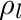
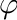
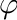
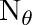
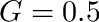

|
v1.3.10
|
Loading...
Searching...
No Matches
|
v1.3.10
|

| Dependencies | NVIDIA CUDA 9.0+ Visualizer plug-in |
|---|---|
| CMakeLists.txt | set( PLUGINS "lidar" ) |
| Header File | #include "LiDAR.h" |
| Class | LiDARcloud |
The LiDAR plugin is used to process terrestrial LiDAR data into information that is useful for plant models. For example, this may be to determine leaf area and angle distributions at the voxel scale, or to reconstruct individual leaves and add them to the Context.
| Package | |||
|---|---|---|---|
| NVIDIA CUDA 9.0+ | Mac OSX:$ brew install Caskroom/cask/cuda | Use CUDA installer | Use CUDA installer |
For help choosing the correct CUDA toolkit version for your system, consult this page: Choosing the right CUDA and OptiX version
Useful OS-specific information for installing CUDA can be found here: Install and Set-up
If you are using a PC, it is likely you will need to increase the GPU timeout in the registry, otherwise calculations lasting longer than 2 secs. will timeout and kill your program. A guide on how to increase the timeout can be found here: Increasing graphics driver timeout
| Constructors |
|---|
| LiDARcloud( void ) |
The LiDARcloud class contains point cloud data, and is used to perform processing operations on the data. The class constructor does not take any arguments.
| Primitive Data Label | Symbol | Units | Data Type | Description | Available Plug-ins | Default Value |
|---|---|---|---|---|---|---|
| reflectivity_lidar |  | unitless | float | Primitive reflectivity in the waveband of the laser. This is used to calculate the return intensity in synthetic scans. | N/A | 1.0 |
The algorithms associated with the LiDAR plug-in work with data obtained from a rectangular scan pattern. In this scan pattern, points are sampled at equally spaced intervals in both the zenithal (  ) and azimuthal ( ) directions. At a given azimuthal angle, some range of zenithal angles are consecutively scanned, which represents a "scan line". Each scan line starts at some zenithal angle min and ends at some zenithal angle max. After recording a scan line at the first azimuthal angle min, the scanner incrementally moves to the next adjacent azimuthal scan direction and records the next scan line until it reaches the azimuthal angle max.
) and azimuthal ( ) directions. At a given azimuthal angle, some range of zenithal angles are consecutively scanned, which represents a "scan line". Each scan line starts at some zenithal angle min and ends at some zenithal angle max. After recording a scan line at the first azimuthal angle min, the scanner incrementally moves to the next adjacent azimuthal scan direction and records the next scan line until it reaches the azimuthal angle max.
The number of zenithal points within each scan line is given by , and the total number of scan lines (i.e., number of individual azimuthal directions) is given by  .
.
Angles are typically specified as degrees. Distance units are arbitrary, but must be used consistently.


The laser beam emitted from a LiDAR instrument has some finite diameter, which increases with distance from the scanner. In many cases, the beam diameter may be larger than the width of individual leaves by the time it reaches the canopy. This means that a single laser pulse may intersect multiple objects along its path to the ground.
For a "discrete-return" instrument, only one (or sometimes a few) hit points are recorded per laser pulse. The distance from the scanner recorded for the hit point is an effective average distance to all objects intersected by the beam.
By contrast "full-waveform" instruments are able to record multiple hit point locations along a single laser pulse by analyzing the return timeseries or "waveform". This class of instruments is able to process the timeseries of pulse returns into separate distances. Full-waveform instruments are preferred because they provide more information, particularly in dense canopies where a discrete-return instrument would rarely record the location of the ground. Technically, full-waveform instruments ultimately output discrete hit points, but for the purposes of this documentation we will consider discrete-return data to have a single hit point per laser pulse, and full-waveform data to have an unlimited number of hit points per laser pulse.
There is sometimes ambiguity or inconsistency in usage of the terms discrete-return and full-waveform LiDAR data in the literature. For the purposes of this documentation, we will call "discrete-return" data as a scan that records only a single hit point per laser pulse, and "full-waveform" data as a scan that can record a large number of hit points per laser pulse.

Each scan has a set of parameters or "metadata" that must be specified in order to process the data. Some parameters are optional, while some are required. The following metadata is needed to define the overall scan itself, in addition to individual scan hit points. Note that XML tags are case-sensitive.
| Metadata | XML tag | Description | Default behavior |
|---|---|---|---|
| Scanner origin | <origin> | (x,y,z) coordinate of the scanner. This is the position where the scanner rays are sent from. Values should be separated by a space in the XML file. | None: REQUIRED |
| size | <size> | Number of scan points in the theta (zenithal) and phi (azimuthal) directions. Values should be separated by a space in the XML file. | None: REQUIRED |
| min (degrees) | <thetaMin> | Minimum scan theta (zenital) angle. min=0 if the scan starts from upward vertical, min=90 is the scan starts from horizontal, etc. | 0 |
| max (degrees) | <thetaMax> | Maximum scan theta (zenital) angle. max=90 if the scan ends at horizontal, min=180 is the scan ends at downward vertical, etc. | 180 |
| min (degrees) | <phiMin> | Minimum scan phi (azimuthal) angle. min=0 if the scan starts pointing in the +y direction, min=90 if the scan starts pointing in the +x direction, etc. | 0 |
| max (degrees) | <phiMax> | Maximum scan phi (azimuthal) angle. max=90 if the scan ends pointing in the +x direction, min=180 if the scan ends pointing in the -y direction, etc. NOTE: max could be greater than 360 if min>0 and the scanner makes a full rotation in the in the azimuthal direction, in which case max= min+360. | 360 |
| translation | <translation> | Global (x,y,z) translation to be applied to entire scan, including the origin and all hit points. | No translation. |
| rotation (degrees) | <rotation> | Global spherical rotation (theta,phi) to be applied to the entire scan, including the origin and all hit points. | No rotation. |
| beam exit diameter (meters) | <exitDiameter> | Effective diameter of laser beam exiting the instrument. Only used for full-waveform synthetic data generation. | 0 (discrete return) |
| beam divergence angle (rad) | <beamDivergence> | Angle of laser beam divergence after exiting the instrument. Only used for full-waveform synthetic data generation. | 0 |
| ASCII point cloud file | <filename> | File containing point cloud data to be read. | No file will be read. |
| ASCII file column format | <ASCII_format> | Labels for columns in ASCII point cloud file. See section below for possible values and examples. Labels should be separated by a space in the XML file. | x y z |
In addition to scan metadata, the data collected by the scan itself must also be added to the plug-in. This can be achieved by either reading data from an ASCII text file, or performing a synthetic scan. At a minimum, point cloud data consists of the Cartesian (x,y,z) coordinates of each hit in the scan. Additionally, hit points may also have an associated r-g-b color value, or some other scalar data value such as intensity or temperature.
For the processing algorithms to work, the scan direction associated with each hit point must also be known. This can be specified directly as a ( , ) spherical coordinate, or using the row (i.e., index in the scanline: 1...  ) and column (i.e., scanline index: 1...
) and column (i.e., scanline index: 1...  ). Otherwise, it will calculate the scan direction by drawing a line between the scan origin position and the hit point.
). Otherwise, it will calculate the scan direction by drawing a line between the scan origin position and the hit point.
For full-waveform data, additional information is needed about the hit points. Specifically, the total number of hit points along the pulse. IfThe index can start at 0 or 1 for the first hit along the pulse, it just should be consistent for all points.
Scan metadata is typically specified by loading an XML file containing the relevant metadata for each scan. For real data, the XML file specifies the path to an ASCII text file that contains the data for each scan. For synthetic data, the parameters of the simulated scan are loaded from the XML file and used to perform the scan.
The code below gives a sample XML file for loading multiple scans. As specified in the metadata table above, not all entries are required (see above).
<helios>
<scan>
<filename> /path/to/data/file.xyz </filename>
<ASCII_format> x y z r255 g255 b255 target_count target_index timestamp </ASCII_format>
<origin> 0 0 0 </origin>
<size> 2500 4500 </size>
<thetaMin> 30 </thetaMin>
<thetaMax> 130 </thetaMax>
<phiMin> 0 </phiMin>
<phiMax> 360 </phiMax>
<translation> 1.2 1.5 -10.2 </translation>
<rotation> 20 180 </rotation>
<exitDiameter> 0.005 </exitDiameter>
<beamDivergence> 0.003 </beamDivergence>
</scan>
</helios>The ASCII text file containing the data is a plain text file, where each row corresponds to a hit point and each column is some data value associated with that hit point. The "ASCII_format" tag defines the column format of the ASCII text file (in this case, file.xyz). Each entry in the list specifies the meaning of each column. Possible fields are listed in the table below:
| Label | Description | Default behavior |
|---|---|---|
| x | x-component of the (x,y,z) Cartesian coordinate of the hit point. | None: REQUIRED |
| y | y-component of the (x,y,z) Cartesian coordinate of the hit point. | None: REQUIRED |
| z | z-component of the (x,y,z) Cartesian coordinate of the hit point. | None: REQUIRED |
| zenith (or zenith_rad) | Zenithal angle (degrees) of scan ray direction corresponding to the hit point. If "zenith_rad" is used, theta has units of radians rather than degrees. | Calculated from scan origin and hit (x,y,z). |
| azimuth (or azimuth_rad) | Azimuthal angle (degrees) of scan ray direction corresponding to the hit point. If "azimuth_rad" is used, phi has units of radians rather than degrees. | Calculated from scan origin and hit (x,y,z). |
| r (or r255) | red component of (r,g,b) hit color. If "r" tag is used, r is a floating point value between 0 and 1. If "r255" is used, r is an integer and between 0 and 255. | r=1 or r255=255 |
| g (or g255) | green component of (r,g,b) hit color. If "g" tag is used, g is a floating point value between 0 and 1. If "g255" is used, g is an integer between 0 and 255. | g=0 or g255=0 |
| b (or b255) | blue component of (r,g,b) hit color. If "b" tag is used, b is a floating point value between 0 and 1. If "b255" is used, b is an integer between 0 and 255. | b=0 or b255=0 |
| target_count | Number of hits along scan pulse. | Assumed to be discrete return data. |
| target_index | Index of hit along scan pulse. | Assumed to be discrete return data. |
| timestamp | Unique timestamp of hit point. | Assumed to be discrete return data. |
| deviation | Indication of variability in return within a given hit point. Note: this is never used for real data, but can be output for synthetic data. | N/A |
| intensity | Intensity of return. Note: this is never used for real data, but can be output for synthetic data. | N/A |
| (label) | User-defined floating-point data value. "label" can be any string describing data. For example, "temperature", etc. | N/A |
The XML file can be automatically loaded into the point cloud using the loadXML() function, as illustrated below.
#include "Context.h"
#include "LiDAR.h"
using namespace helios;
int main( void ){
LiDARcloud pointcloud; //Initialize the LiDAR point cloud
pointcloud.loadXML("/path/to/file.xml");
}Rectangular grid cells are used as the basis for processing point cloud data. For example, total leaf area (or leaf area density) may be calculated for each grid cell. Grid cells or "voxels" are parallelpiped volumes. The top and bottom faces are always horizontal, but the cells can be rotated in the azimuthal direction.
Grid cells are defined by specifying the (x,y,z) position of its center, and the size of the cell in the x, y, and z directions. Additional optional information can also be provided for grid cells, which are detailed below.
| Tag | Description | Default behavior |
|---|---|---|
| center | (x,y,z) Cartesian coordinates of cell center. | None: required. |
| size | Length of cell sides in x, y, and z directions. | None: required. |
| rotation | Azimuthal rotation of the cell in degrees. | 0 |
| Nx | Grid cell subdivisions in the x-direction. | 1 |
| Ny | Grid cell subdivisions in the y-direction. | 1 |
| Nz | Grid cell subdivisions in the z-direction. | 1 |
The grid cell subdivisions options allow the cells to be easily split up into a grid of smaller cells. For example, Nx=Ny=Nz=3 would create 27 grid cells similar to a "Rubik's cube".
Grid cell options can be specified in an XML file using the tags listed in the table above. Multiple grid cells are added by simply adding more <grid>...</grid> groups to the XML file.
<grid>
<center> 0 0 0.5 </center>
<size> 1 1 1 </size>
<rotation> 30 </rotation>
<Nx> 3 </Nx>
<Ny> 3 </Ny>
<Nz> 3 </Nz>
</grid>One way to figure out the appropriate dimension and position of the voxel grid is using the visualizer and trial-and-error. Make a guess of the voxel parameters, then visualize the point cloud and voxels together and adjust accordingly. This can be tedious and time-consuming because you need to re-run the entire code each time.
An often faster way to figure out the dimensions of the voxel grid is to use point cloud visualization software such as Cloud Compare. Load the point cloud data into Cloud Compare, then add a Box (file->Primitive Factory). You can translate or rotate the box by clicking on the Box object in the DB Tree pane, then select the menu item Edit->Translate/Rotate. To change the box size, click on the box vertices in the DB Tree pane, then go to Edit->Multiply/Scale. You can then find the resulting box location and dimensions in the Properties pane.

A triangulation between adjacent points is typically required for any of the available data processing algorithms. In the triangulation, adjacent hit points are connected to form a mesh of triangular solid surfaces. The algorithm for performing this triangulation is described in detail in Bailey and Mahaffee (2017a).
There are two possible options to be specified when performing the triangulation. A required option is , which is the maximum allowable length of a triangle side. This parameter prevents triangles from connecting adjacent leaves (i.e., we only want triangles to be formed with neighboring points on the same leaf). Typically we want to be much larger than the spacing between adjacent hit points, and much smaller than the characteristic length of a leaf. For example, Bailey and Mahaffee (2017a) used 5cm for a cottonwood tree.
Another optional parameter is the maximum allowable aspect ratio of a triangle, which is the ratio of the length of the longest triangle side to the shortest triangle side. This has a similar effect as the parameter, and works better in some cases.
The following code sample illustrates how to perform a triangulation.
#include "Context.h"
#include "LiDAR.h"
using namespace helios;
int main( void ){
LiDARcloud pointcloud; //Initialize the LiDAR point cloud
pointcloud.loadXML("/path/to/file.xml"); //Load the XML file
pointcloud.triangulateHitPoints( 0.05, 5 ); //Perform triangulation with Lmax=0.05 and maximum aspect ratio of 5
}Using the triangulation and defined grid cells, the plug-in can calculate the leaf area (and leaf area density) for each grid cell. The algorithm for calculating leaf area is described in detail in Bailey and Mahaffee (2017b) (except that in the current implementation, weighting by the sine of the scan zenith direction has been removed).
Performing the calculations is simple and requires no inputs, which is illustrated with the following code sample. Note that the leaf area calculation requires that the triangulation has been performed beforehand. If no triangulation is available, the plug-in will assume a uniformly distributed leaf angle orientation ( ). The leaf area calculation also requires that at least one grid cell was defined.
When using real LiDAR data, it is recommended to gapfill sky/miss points using the LiDARcloud::gapfillMisses() method if this has not already been done by the scanner or in pre-processing. When a laser pulse does not intersect any object and reaches the sky, many scanners do not record any hit points. These miss points are important for accurate determination of leaf area.
#include "Context.h"
#include "LiDAR.h"
using namespace helios;
int main( void ){
LiDARcloud pointcloud; //Initialize the LiDAR point cloud
pointcloud.loadXML("/path/to/file.xml"); //Load the XML file
pointcloud.gapfillMisses(); //Gapfill sky/miss points if necessary
pointcloud.triangulateHitPoints( 0.05, 5 ); //Perform triangulation with Lmax=0.05 and maximum aspect ratio of 5
pointcloud.calculateLeafAreaGPU(); //Calculate leaf area for each grid cell
}A leaf-by-leaf reconstruction can be performed for the plant of interest using the method described in Bailey and Ochoa (2018). The reconstruction utilizes the triangulation and leaf area computations to ensure the correct leaf angle and area distributions on average, and thus requires that these routines have been run before performing the reconstruction.
There are two types of available reconstructions. One is a triangular reconstruction that directly uses triangles resulting from the triangulation to produce the reconstruction. The advantage is that it does not require any assumption about the shape of the leaf and can give a more direct reconstruction in some cases, however this reconstruction is typically not recommended as it often results in many small triangle groups that don't necessarily resemble actual leaves. This reconstruction is performed using the leafReconstructionTriangular() function, whose arguments are thresholds for the minimum and maximum area of reconstructed triangular leaf groups.
The other type of reconstruction is the "Alpha Mask" reconstruction, which replaces the triangle groups with a "prototype" leaf (which is an alpha mask). This ensures that all reconstructed leaves are representative of an actual leaf in terms of shape and size. This reconstruction is performed using the leafReconstructionAlphaMask() function. This function's arguments, in addition to area thresholds, are the aspect ratio of the prototype leaf (length along midrib divided by width perpendicular to midrib) and the path to a PNG image file to be used for the leaf alpha mask.
There is a function that can automatically add all reconstructed elements (triangles or alpha masks) to the Helios Context, which is addLeafReconstructionToContext().
Below is an example of performing a reconstruction using alpha masks and adding the alpha masks to the Context.
#include "Context.h"
#include "LiDAR.h"
using namespace helios;
int main( void ){
LiDARcloud pointcloud; //Initialize the LiDAR point cloud
pointcloud.loadXML("/path/to/file.xml"); //Load the XML file
pointcloud.triangulateHitPoints( 0.05, 5 ); //Perform triangulation with Lmax=0.05 and maximum aspect ratio of 5
pointcloud.calculateLeafAreaGPU(); //Calculate leaf area for each grid cell
pointcloud.leafReconstructionAlphaMask( 0.001, 0.02, "plugins/visualizer/textures/ElmLeaf.png" ); //Perform the reconstruction
Context context; //Initialize the Context
pointcloud.addLeafReconstructionToContext( &context );
}The LiDAR plug-in can simulate the measurements of discrete-return and full-waveform instruments based on the geometry in the Context. Ray-tracing is used to simulate the emission of radiation from the instrument, and based on ray-object intersection tests with primitive geometry in the model domain, the simulated hit points can be determined. Currently, only a rectangular scan pattern is supported.
To simulate discrete-return instruments, each laser pulse is modeled by a single ray emanating from the scanner origin. Rays are launched according to the scan parameters currently specified in the LiDARcloud. After calling the appropriate synthetic scan generation function (see below), the simulated scan data will be added to the LiDARcloud as if it was imported from real LiDAR data. In addition to the (x,y,z) location of the ray intersection, the model also produces estimates of return intensity, deviation, and can return an identifier for the intersected object.
For full-waveform data simulation, multiple rays are cast for a single laser beam pulse. The density of rays is Gaussian, with the peak at the center of the beam. The model will also record the target count, target index, and timestamp associated with each hit point.
To generate synthetic discrete-return LiDAR data, first add all desired model geometry to the Context. Then declare an instance of the LiDARcloud class as above, and load an XML file containing the scan parameters. As in the case of importing a real point cloud dataset, the XML file must specify the scan origin and the scan resolution at a minimum (see above). However, in the case of synthetic data generation, you will not specify a filename to read containing point cloud data, as this data will be generated by the simulation. You can optionally specify the ASCII_format tag, which will determine which additional data fields should be recorded for each hit point. Valid hit point data fields are listed above in Loading scan data from file.
If no ASCII_format tag is provided in the XML file, the default is to record the (x,y,z) position of the hit point. If the function LiDARcloud::exportPointCloud() is called, it will export the simulated point cloud according to the provided ASCII_format tag (or the default if not provided).
Note that you can add multiple <scan></scan> blocks in a single XML file to perform multiple scans.
Once the LiDARcloud has been declared, and an XML file containing the scan parameters has been read, a discrete-return synthetic scan can be performed by calling LiDARcloud::syntheticScan( helios::Context*, const char* ). This version (i.e., without the optional rays_per_pulse and pulse_distance_threshold arguments) will perform a discrete-return synthetic scan.
The code block below gives an example XML file. As a reminder, you can place this XML file anywhere, but the path given to the LiDARcloud::loadXML() function should either be absolute or relative to the directory in which the executable is being run (usually build/).
<helios>
<scan>
<ASCII_format> x y z r255 g255 b255 </ASCII_format>
<origin> 0 0 1.0 </origin>
<size> 2500 4500 </size>
<thetaMin> 30 </thetaMin>
<thetaMax> 130 </thetaMax>
<phiMin> 0 </phiMin>
<phiMax> 360 </phiMax>
</scan>
</helios>Example code is given below for generating synthetic discrete-return data and writing to an ASCII text file.
#include "Context.h"
#include "LiDAR.h"
using namespace helios;
int main( void ){
Context context;
context.addPatch(); // create some model geometry here
LiDARcloud pointcloud; //Initialize the LiDAR point cloud
pointcloud.loadXML("/path/to/file.xml"); //Load the XML file
pointcloud.syntheticScan( &context ); //generate synthetic data
pointcloud.exportPointCloud( "/path/to/file.xyz" ); //write to ASCII file
}Generation of synthetic full-waveform data is similar to discrete-return, except that additional information is needed to define the scan and simulation. In the XML file, the user must specify the diameter of the laser beam at the scan origin using the <exitDiameter> </exitDiameter> tags, as well as the angle of beam divergence in radians using the <beamDivergence> </beamDivergence> tags. If the exit diameter value is not specified, the default value of 0 is used, which means that the model will revert to discrete-return data generation. If the beam divergence value is not specified, a default beam divergence of 0 will be assumed, which effectively just means that the beam will remain perfectly cylindrical with diameter of exitDiameter.
Contents of an example XML file is given below.
<helios>
<scan>
<ASCII_format> x y z r255 g255 b255 target_count target_index timestamp </ASCII_format>
<origin> 0 0 1.0 </origin>
<size> 2500 4500 </size>
<thetaMin> 30 </thetaMin>
<thetaMax> 130 </thetaMax>
<phiMin> 0 </phiMin>
<phiMax> 360 </phiMax>
<exitDiameter> 0.005 </exitDiameter>
<beamDivergence> 0.003 </beamDivergence>
</scan>
</helios>Running the synthetic data generation function requires the specification of parameters associated with the simulation. The first is the number of rays to use per laser pulse in performing ray-tracing calculations, which sets the maximum possible number of hits possible per pulse. Specifying 1 ray/pulse effectively creates a discrete-return simulation, because that would mean you could only have a maximum of 1 hit/pulse. Ideally, you want a large number of rays/pulse because it allows for more hits/pulse if needed and results in more accurate simulations. The drawback to a very high number of rays/pulse is that the simulation will take longer to run. A value on the order of 100 is usually reasonable.
Second, the user needs to specify the distance threshold for aggregation of similar ray hit distances. For each simulated laser pulse, the number of rays/pulse specified above are launched from the scan origin. When some or all of those rays intersect the same surface, they will record a distance from the scanner to the hit point that is slightly different for each ray. Similar distances, which are presumed to lie on the same surface, are aggregated into a single hit point if they are within this distance threshold of each other. This is similar to how a real LiDAR instrument works as indicated in the sketch above, in that it aggregates similar returns into a single hit point. Specifying too small of a distance threshold may result in many duplicate hit points on the same surface. Specifying too large of a threshold may result in hit points that lie in between two disconnected surfaces (e.g., leaves). A threshold value that is smaller than the leaf or branch with is usually reasonable.
Below is example code with a rays/pulse value of 100 and distance threshold of 0.02.
#include "Context.h"
#include "LiDAR.h"
using namespace helios;
int main( void ){
Context context;
context.addPatch(); // create some model geometry here
LiDARcloud pointcloud; //Initialize the LiDAR point cloud
pointcloud.loadXML("/path/to/file.xml"); //Load the XML file
int rays_per_pulse = 100;
float pulse_distance_threshold = 0.02;
pointcloud.syntheticScan( &context, rays_per_pulse, pulse_distance_threshold ); //generate synthetic data
pointcloud.exportPointCloud( "/path/to/file.xyz" ); //write to ASCII file
}Synthetic hit points can be labeled based on the primitive they intersect based on the value of the primitive data "object_label" of type 'int'. Primitive groups can be labeled in any way by setting a common integer value for the "object_label" primitive data. In order to enable synthetic data labeling, the column "object_label" must be included within the <ASCII_format> tag in the scan XML file. The object_label value for each hit point will be recorded and a column will be written if the point cloud is exported to file.
Results can be visualized using the Visualizer plug-in for Helios. There are two possible means for doing so. First, is to add the relevant geometry to the Context, then visualize primitives in the Context using the Visualizer. This works for the triangulation and plant reconstructions, but cannot be used to visualize just the point cloud since there is no "point" primitive in the Context. The next section describes how to accomplish this.
The second option is to add any geometry directly to the Visualizer. There are several functions build in to the LiDAR plug-in that can to this automatically, which are listed below.
| Function | Description |
|---|---|
| LiDARcloud::addHitsToVisualizer( Visualizer * visualizer, const uint pointsize ) | Add all hits in the point cloud to the visualizer. |
| LiDARcloud::addGridToVisualizer( Visualizer * visualizer ) | Add all grid cells to the visualizer, which are displayed as translucent voxels. |
| LiDARcloud::addTrianglesToVisualizer( Visualizer * visualizer ) | Add all triangles to the visualizer, which are colored by the r-g-b color value. |
| LiDARcloud::addTrianglesToVisualizer( Visualizer * visualizer, const uint gridcell ) | Add triangles from a specified grid cell to the visualizer, which are colored by the r-g-b color value. |
The following code sample illustrates how to visualize the point cloud.
#include "Context.h"
#include "LiDAR.h"
#include "Visualizer.h"
using namespace helios;
int main( void ){
LiDARcloud pointcloud; //Initialize the LiDAR point cloud
pointcloud.loadXML("/path/to/file.xml"); //Load the XML file
Visualizer vis( 1000 ); //Initialize the visualizer
pointcloud.addHitsToVisualizer( &vis, 1 ); //Add the hit points to visualizer
vis.plotInteractive();
}Results of data processing can be easily written to file for external analysis. The following table lists these functions. Data is written to an ASCII text file, where each line in the file corresponds to a different data point (e.g., hit point, triangle, etc.).
| Function | Description |
|---|---|
| LiDARcloud::exportPointCloud( const char* filename ) | Write the entire point cloud to ASCII file (this is usually only used for generated synthetic data). |
| LiDARcloud::exportTriangleNormals( const char* filename ) | Write the unit normal vectors [nx ny nz] of all triangles formed from triangulation. |
| LiDARcloud::exportTriangleNormals( const char* filename, const int gridcell ) | Write the unit normal vectors of triangles formed from triangulation that reside in a specified grid cell. |
| LiDARcloud::exportTriangleAreas( const char* filename ) | Write the areas of all triangles formed from triangulation. |
| LiDARcloud::exportTriangleAreas( const char* filename, const int gridcell ) | Write the areas of triangles formed from triangulation that reside in a specified grid cell. |
| LiDARcloud::exportLeafAreas( const char* filename ) | Write the leaf area contained within each voxel. Each line of the output file corresponds to the total leaf area within each voxel. |
| LiDARcloud::exportLeafAreaDensities( const char* filename ) | Write the leaf area density of each voxel. Each line of the output file corresponds to the leaf area density of each voxel. |
The following code sample illustrates an example of how to write results to file.
#include "Context.h"
#include "LiDAR.h"
using namespace helios;
int main( void ){
LiDARcloud pointcloud; //Initialize the LiDAR point cloud
pointcloud.loadXML("/path/to/file.xml"); //Load the XML file
pointcloud.triangulateHitPoints( 0.05, 5 ); //Perform triangulation with Lmax=0.05 and maximum aspect ratio of 5
pointcloud.calculateLeafAreaGPU(); //Calculate leaf area for each grid cell
uint Ncells = pointcloud.getGridCellCount(); //Get the number of grid cells
char f_normals[50], f_areas[50];
for( uint i=0; i<Ncells; i++ ){ //loop over grid cells